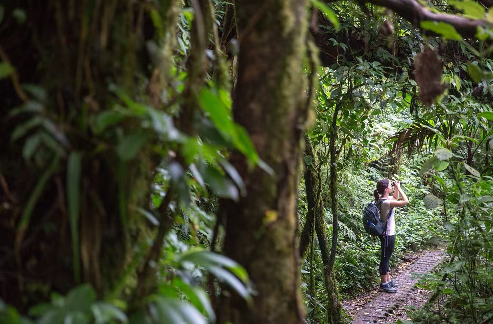
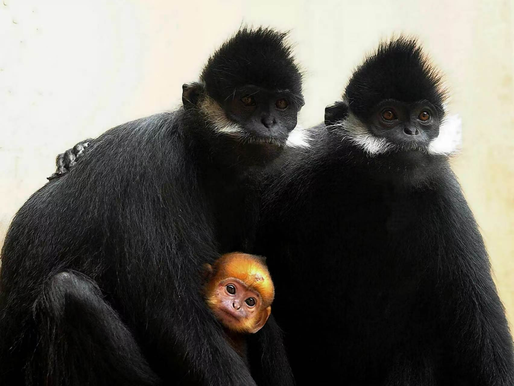

音察灵猴，声寻其踪：基于深度学习的黑叶猴声学监测研究
音察灵猴，声寻其踪：基于深度学习的黑叶猴声学监测研究



黑叶猴声学监测绝非简单的 “数据采集”，而是打通濒危灵长类保护价值链的关键环节 —— 从海量音频中捕捉种群活动的真实节律，让智能技术真正赋能野外保护。
项目若能紧密对接喀斯特保护区实际监测痛点，持续优化设备与模型落地应用，我们坚信这项研究将为黑叶猴种群监测、栖息地管理与长期保护，作出不可替代的重要贡献！
数据来源：中国广西崇左叶猴国家级自然保护区